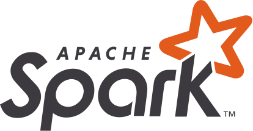
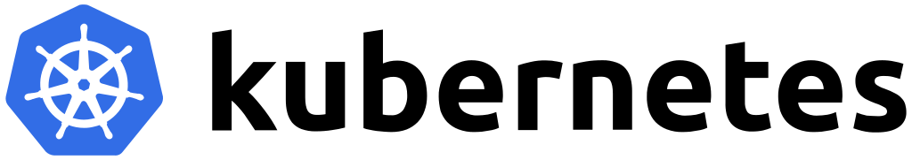

안데스의 블로그
"삽질도 재산이다"

스칼라
FP/OOP 멀티패러다임 프로그래밍 언어

Akka
액터 모델 기반, 동시성 및 분산 처리 도구

Apache Spark
분산 컴퓨팅 프레임워크

Kubernetes
컨테이너 오케스트레이션 도구
AWS
퍼블릭 클라우드 서비스
"삽질도 재산이다"
FP/OOP 멀티패러다임 프로그래밍 언어
액터 모델 기반, 동시성 및 분산 처리 도구
분산 컴퓨팅 프레임워크
컨테이너 오케스트레이션 도구
퍼블릭 클라우드 서비스